Fri 14 Aug · 18 Southsea Rd
Jam Sessions
Bring an instrument or just yourself — an open community jam at the warehouse, every Friday.
More...At Save The World Club, we help our community thrive. We rescue fresh food and share it with neighbours who need it, give unwanted things a second life, help our spaces work for the whole community in an eco-friendly way, and make everyday sustainable living easier. Whatever we do, everyone's welcome — and the planet always comes first. More...
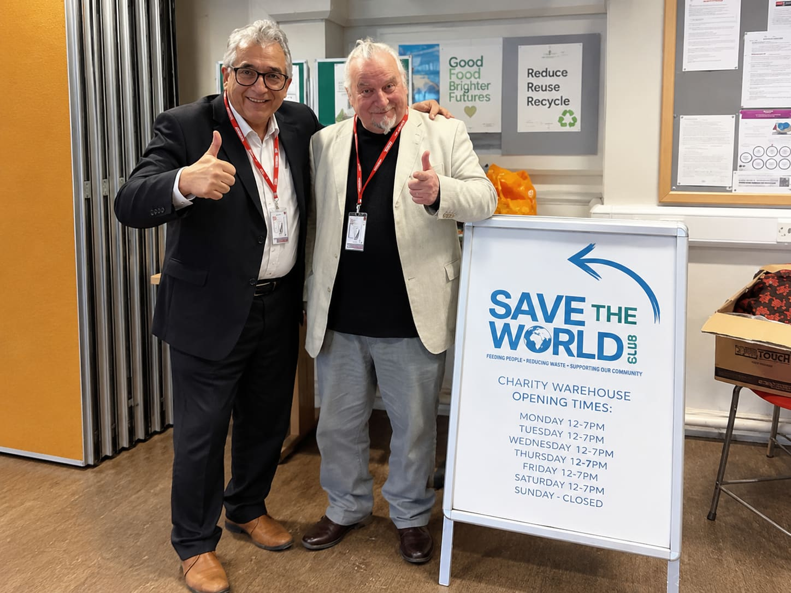
We rent our warehouse in Kingston, and we're raising the money to buy it. If that isn't possible, we'll buy another building nearby, so the work stays in Kingston either way. Much of that money will come from gifts left in wills. If you're writing yours, please think of us. Leaving a legacy →
Bring an instrument or just yourself — an open community jam at the warehouse, every Friday.
More...Our Reuse & Repair Hub in Kingston is where we cut waste and support people.
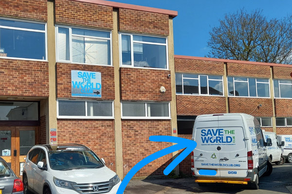
Charity Shop - The CirculatoryDonate goods, browse, and give items a second life. →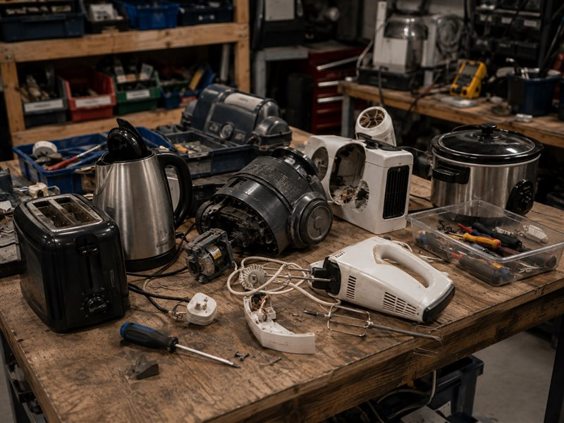
Revive-all Repair HubFree electrical repairs from our Revive-all team — you only pay for replacement parts. →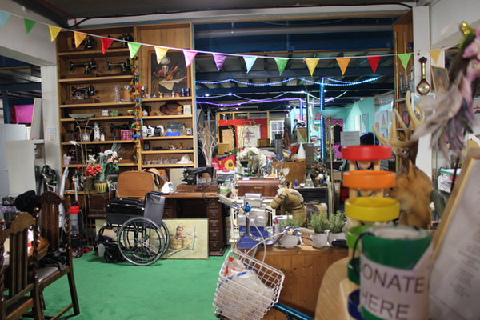
Prop HireRent items you don't want to buy — our library of things, from furniture to one-off finds. →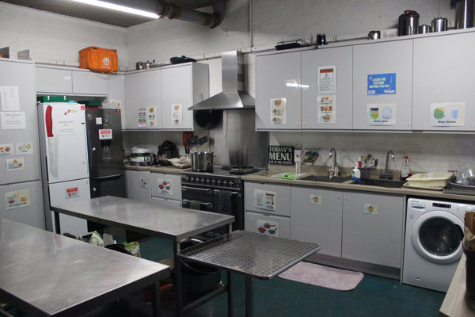
Venue HireHire our kitchen, café and event space for your gathering, workshop or production. →Our Food projects turn surplus into Affordable and Free Food in Kingston, shared through cafés, community fridges and cooking together.
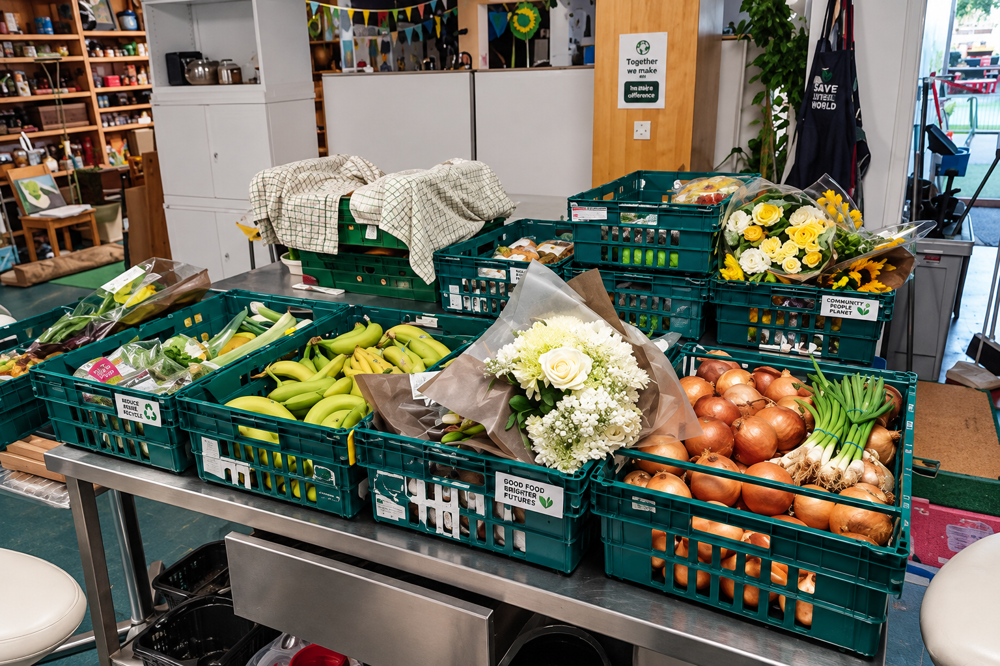
Community FridgeFresh surplus food rescued nightly from local retailers — free for anyone who needs it. → Community KitchenOur fully equipped 200 sq ft kitchen hosts free cooking sessions like World on a Plate. →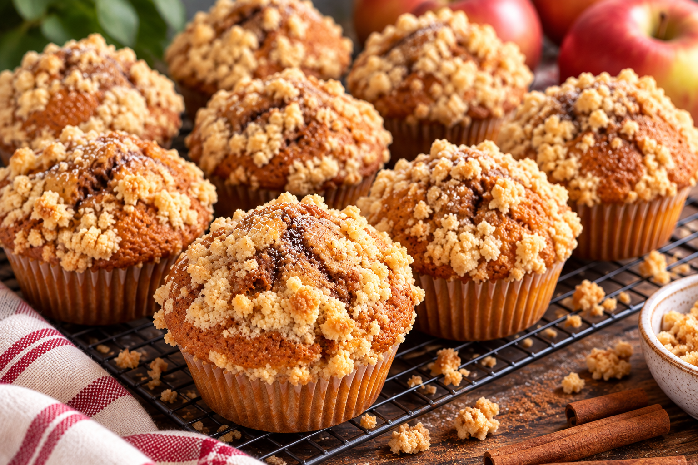
Welcome Table CaféOur affordable charity café at the warehouse — every Tuesday 1–5pm, with all funds supporting our other projects. →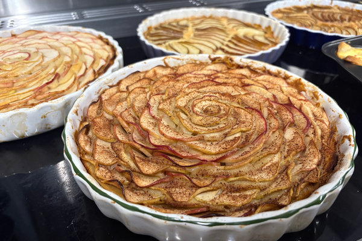
Square 1 CaféA free, welcoming Saturday café at Kingston Environment Centre, New Malden — a warm space where everyone is welcome. →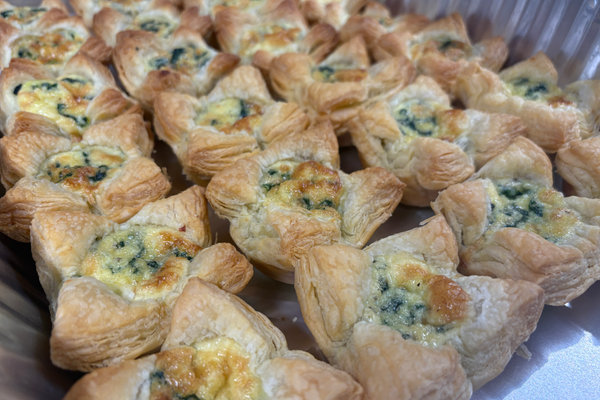
Surplus Food Event CateringBy our KICS team (Kingston Intercultural Catering Service) — every booking funds our community food projects. →Our Environment projects are all about Orchard and Gardening in Kingston. We grow food, skills and friendships.
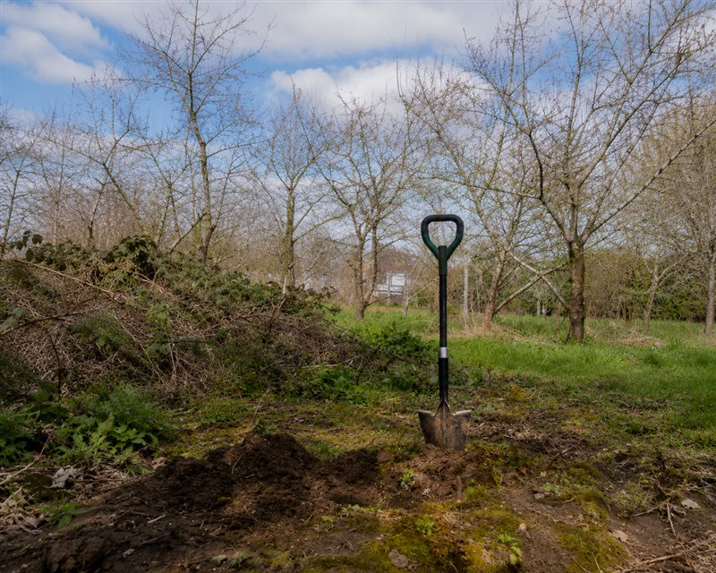
Kingston OrchardLearn to grow your own food at Knollmead Allotments — weekly sessions every Sunday. →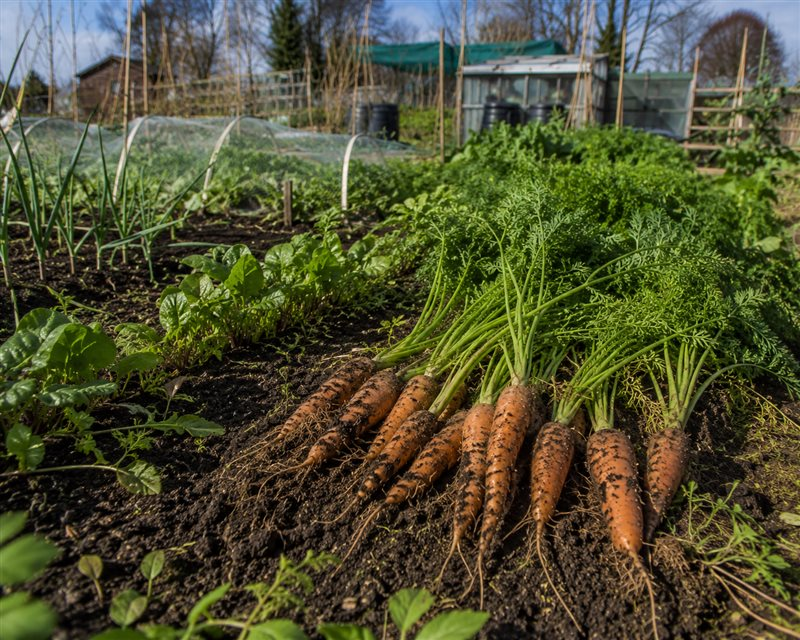
Gardening ProjectsChalice Garden sessions and our new Kingston Green Roots project — growing food, skills and friendships. →Our Art projects bring people together through Arts & Music in Kingston, and everyone's welcome to join in.
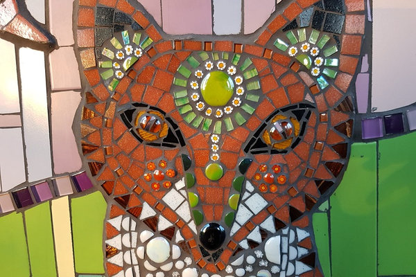
Community Mosaics300 m² of community-made mosaics across Kingston — join a workshop or walk the mosaic trail. →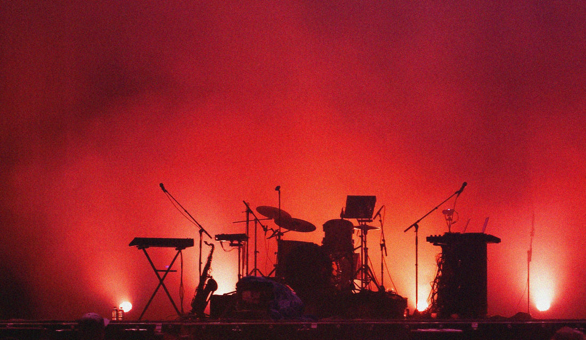
Music Rehearsal StudioAn affordable rehearsal space for local musicians at the warehouse — bookings now live. →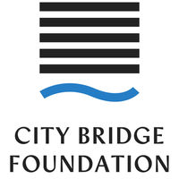
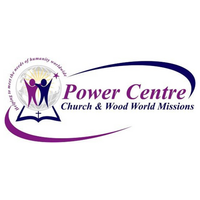
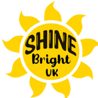
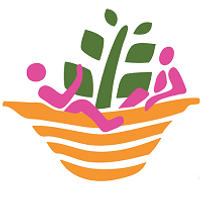
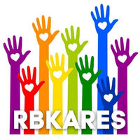
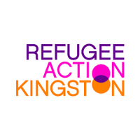
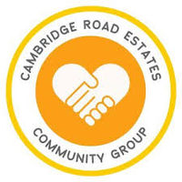
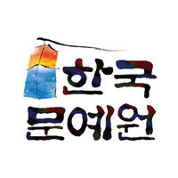
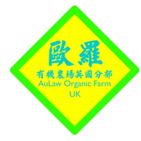
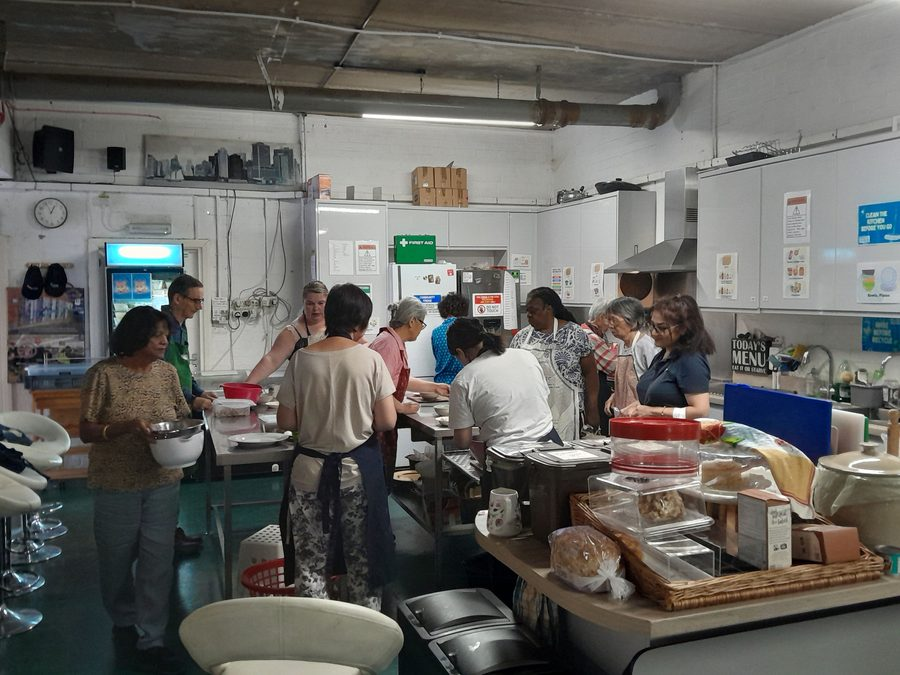
I came to Square 1 for the warm room and the free coffee, and left having talked to three people I'd never met. Get there before two if you want the apple tart.
They fixed my kettle for the price of a switch — four pounds. It took two visits because the part had to be ordered, but two visits still beats buying a new one.
Sunday mornings at Knollmead are now the thing I plan my week around. I have killed one plum tree and been entirely forgiven.
Furnished most of a flat from the warehouse for under fifty pounds. The desk has someone else's initials carved in the corner and I've kept them there.
The fridge got us through a hard few months. Nobody asks you anything — it is food that would otherwise have been thrown out, and the volunteers are careful to make that plain.
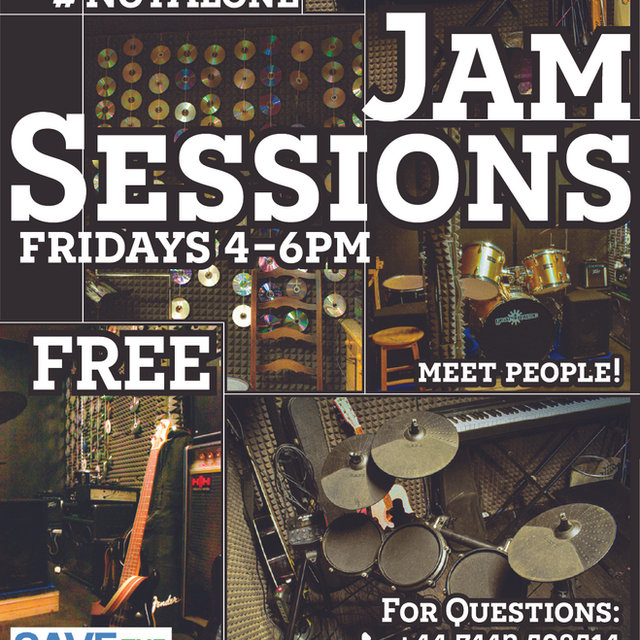
Friday jam is the least intimidating room I have ever played in. I turned up with a bass I can barely play and nobody minded.
Our class helped tile the fox. They still point it out from the bus.